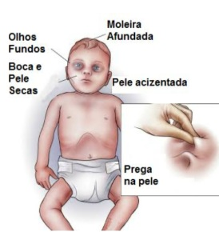

A desidratação infantil acontece quando a criança perde mais líquidos do que consegue repor. Isso pode ocorrer em situações de vômitos, diarreia, febre, calor excessivo, baixa ingestão de líquidos ou dificuldade para mamar e se alimentar.
Crianças pequenas são mais vulneráveis à desidratação porque têm menor reserva de água no corpo e podem piorar mais rapidamente do que os adultos. Por isso, é muito importante que os pais saibam reconhecer os primeiros sinais e procurem ajuda quando houver sinais de alerta.
A desidratação infantil pode começar de forma leve, com sede e boca mais seca, mas pode evoluir para sonolência, pouca urina, olhos fundos e cansaço importante. Quanto mais cedo os cuidados forem iniciados, maiores as chances de evitar complicações.

O que pode causar desidratação infantil?
As causas mais comuns de desidratação em crianças são vômitos e diarreia, principalmente quando acontecem várias vezes ao dia. Nesses casos, a criança perde água e sais minerais importantes para o funcionamento do corpo.
A febre também pode contribuir para a desidratação, pois aumenta a perda de líquidos pelo suor e pela respiração. Além disso, quando a criança está doente, é comum aceitar menos comida, leite materno, fórmula ou água, o que pode piorar o quadro.
Outras situações que exigem atenção são dias muito quentes, prática de atividade física intensa, recusa persistente de líquidos, dor para engolir, aftas, infecções e qualquer condição que reduza a ingestão de líquidos.
9 sinais de desidratação infantil – os pais devem ficar atentos aos seguintes sinais:
- Boca e língua secas
A boca seca é um dos primeiros sinais de que a criança pode estar precisando de mais líquidos. Os lábios também podem ficar ressecados.
- Menos xixi que o habitual
A diminuição da urina é um sinal importante. Em bebês, observe se as fraldas ficam secas por muitas horas. Em crianças maiores, perceba se elas passam muito tempo sem urinar ou se a urina está muito escura.
- Choro sem lágrimas
Quando a criança chora, mas não produz lágrimas, isso pode indicar que o corpo está com pouca hidratação.
- Olhos fundos
Olhos mais fundos ou aparência abatida podem ser sinais de desidratação, especialmente quando associados a outros sintomas.
- Sonolência ou irritabilidade
A criança desidratada pode ficar mais sonolenta, molinha, irritada ou com menos energia para brincar e interagir.
- Sede intensa
Muita sede pode ser um sinal de que o corpo está tentando compensar a perda de líquidos. Porém, em casos mais graves, a criança pode ficar tão prostrada que não consegue nem pedir líquidos.
- Pele fria, manchada ou com pouca elasticidade
A pele pode ficar fria, pálida ou manchada. Em alguns casos, quando levemente pinçada, demora mais para voltar ao normal.
- Moleira funda em bebês
Nos bebês pequenos, a moleira mais funda que o habitual pode ser um sinal de alerta para desidratação infantil.
- Cansaço importante ou prostração
Se a criança está muito cansada, molinha, difícil de acordar ou sem responder como de costume, procure atendimento imediatamente.
O que fazer em casa diante de sinais leves?
Se a criança estiver bem, alerta, conseguindo beber e sem sinais de gravidade, ofereça líquidos em pequenas quantidades e com frequência. Em bebês que mamam, mantenha o aleitamento materno em livre demanda.
Quando indicado, o soro de reidratação oral pode ajudar a repor água e sais minerais perdidos em episódios de diarreia e vômitos. Ele deve ser oferecido conforme orientação médica ou conforme as recomendações do serviço de saúde.
Se a criança estiver vomitando, oferecer grandes volumes de uma vez pode piorar os vômitos. Nesses casos, pequenas quantidades, com mais frequência, costumam ser melhor toleradas.
Evite oferecer refrigerantes, sucos muito açucarados, bebidas esportivas ou receitas caseiras sem orientação, pois podem não repor adequadamente os sais minerais e até piorar alguns quadros.
Quando procurar atendimento médico?
Procure atendimento imediatamente se a criança apresentar sonolência excessiva, prostração, dificuldade para beber líquidos, vômitos persistentes, diarreia intensa, sangue nas fezes, febre alta, sinais de desidratação moderada ou grave, piora do estado geral ou se for um bebê pequeno.
Também é importante procurar o pediatra se a criança não melhora, se urina muito pouco, se não consegue manter líquidos no estômago ou se os pais percebem que algo está diferente do habitual.
Como prevenir desidratação infantil?
A melhor forma de prevenir desidratação infantil é manter boa oferta de líquidos, especialmente em dias quentes ou durante doenças com febre, vômitos e diarreia. Em bebês pequenos, o leite materno ou a fórmula continuam sendo a principal fonte de hidratação, de acordo com a idade e a orientação do pediatra.
Durante quadros de diarreia ou vômitos, observe a frequência das evacuações, a quantidade de urina, o comportamento da criança e a aceitação de líquidos. Esses sinais ajudam a perceber se o quadro está melhorando ou piorando.
A desidratação infantil pode evoluir rapidamente, mas reconhecer os sinais de alerta faz toda a diferença. Sempre que houver dúvida, principalmente em bebês e crianças pequenas, procure orientação do pediatra.
Fontes e orientações complementares
Para saber mais sobre desidratação infantil, diarreia e reidratação oral, consulte também as orientações do Ministério da Saúde e da Sociedade Brasileira de Pediatria. Leia também: Leia também: Febre em crianças: quando se preocupar? A importância da pediatria preventiva no acompanhamento infantil.